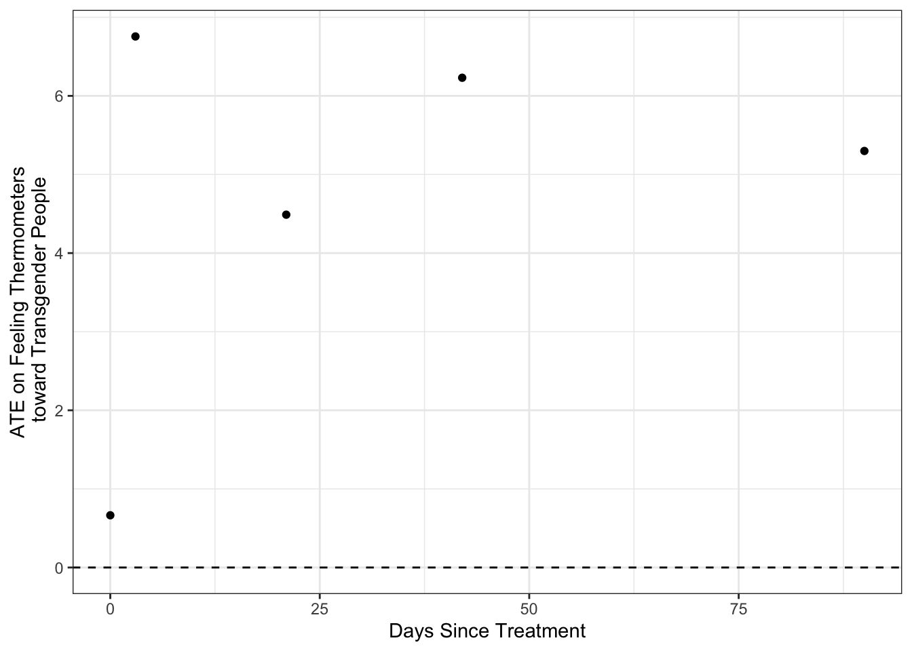
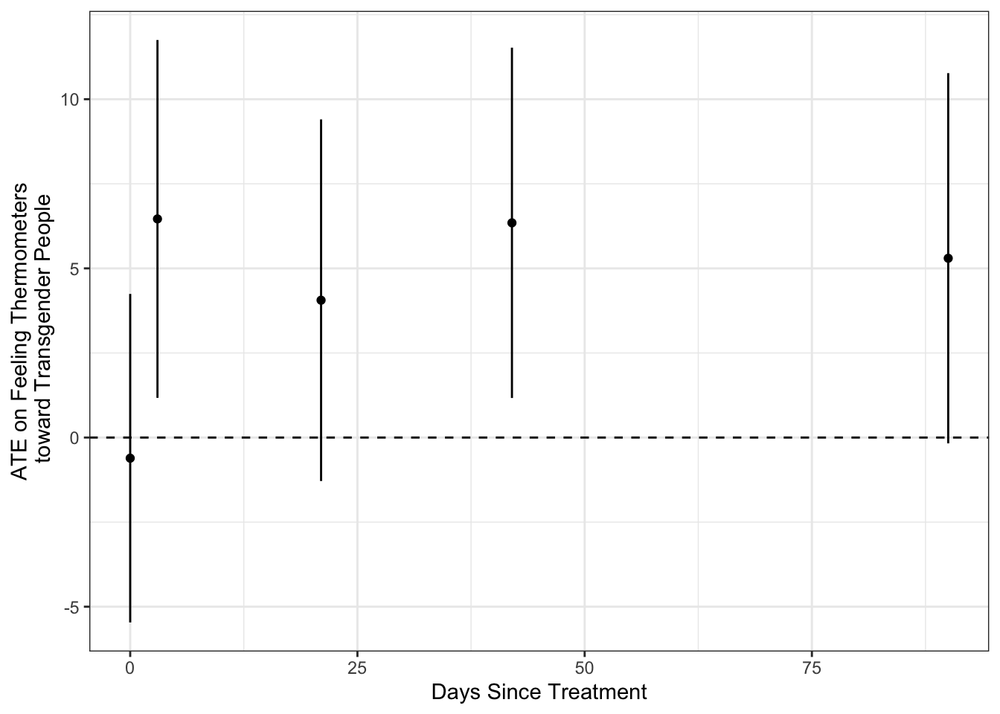

set.seed(20220217)
graded_question <- sample(1:9,size = 1)
paste("Question",graded_question,"is the graded question for this week")[1] "Question 2 is the graded question for this week"Your Group Members Names Here
January 24, 2024
Today we will explore the logic and design of Broockman and Kalla’s 2016 study, “Durably reducing transphobia: A field experiment on door-to-door canvassing”, from the recruitment of subjects for the study to the delivery of their interventions. Then we will explore whether the intervention had any effect on respondents’ feelings toward transgender individuals.
To accomplish this we will:
One of these 9 tasks (excluding the weekly) will be randomly selected as the graded question for the lab.
set.seed(20220217)
graded_question <- sample(1:9,size = 1)
paste("Question",graded_question,"is the graded question for this week")[1] "Question 2 is the graded question for this week"You will work in your assigned groups. Only one member of each group needs to submit the html file of lab.
This lab must contain the names of the group members in attendance.
If you are attending remotely, you will submit your labs individually.
Here are your assigned groups for the semester.
Error in `tibble::tibble()`:
! Tibble columns must have compatible sizes.
• Size 4: Existing data.
• Size 5: Column `Group 7`.
ℹ Only values of size one are recycled.Error in eval(expr, envir, enclos): object 'groups_df' not foundConceptually, this lab will give you lots of practice calculating means and conditional means. We will use these means to
\[ \begin{align*} E \left[ \frac{\sum_1^m Y_i}{m}-\frac{\sum_{m+1}^N Y_i}{N-m}\right]&=\overbrace{E \left[ \frac{\sum_1^m Y_i}{m}\right]}^{\substack{\text{Average outcome}\\ \text{among treated}\\ \text{units}}} -\overbrace{E \left[\frac{\sum_{m+1}^N Y_i}{N-m}\right]}^{\substack{\text{Average outcome}\\ \text{among control}\\ \text{units}}}\\ &= E [Y_i(1)|D_i=1] -E[Y_i(0)|D_i=0] \end{align*} \]
We’ll see that these quantities can be calculated quickly for multiple variables using the following commands:
group_by and summarise commands to quickly calculate average values for different groups, and the mutate function to calculate differences between these averagesacross() and starts_with() functions to calculate summaries like a mean across multiple variables that start the the same pre-fixes.pivot_longer(), pivot_wider() and left_join commands to gather, spread, and merge data so that we can calculate the difference of means simply by subtracting means for one group in one column from means for another group in a different columnggplot package to graphically display our results.As with every lab, you should:
author: section of the YAML header to include the names of your group members in attendance.Before we get started working with the data, please provide some brief answers (1-3 sentences) to the following questions
Here is some minimal code so that your lab will compile when you first knit it.
── Attaching core tidyverse packages ──────────────────────── tidyverse 2.0.0 ──
✔ dplyr 1.1.4 ✔ readr 2.1.4
✔ forcats 1.0.0 ✔ stringr 1.5.1
✔ ggplot2 3.4.4 ✔ tibble 3.2.1
✔ lubridate 1.9.3 ✔ tidyr 1.3.0
✔ purrr 1.0.2
── Conflicts ────────────────────────────────────────── tidyverse_conflicts() ──
✖ dplyr::filter() masks stats::filter()
✖ dplyr::lag() masks stats::lag()
ℹ Use the conflicted package (<http://conflicted.r-lib.org/>) to force all conflicts to become errors# Set working directory
wd <- "." # Change to file path on your computer
setwd(wd)
# Load additional packages
the_packages <- c(
## R Markdown
"kableExtra","DT",
## Tidyverse
"tidyverse", "lubridate", "forcats",
"haven", "labelled",
## Extensions for ggplot
"ggmap","ggrepel", "ggridges",
"ggthemes", "ggpubr", "GGally",
"scales", "dagitty", "ggdag",
# Data
"COVID19","maps","mapdata",
"qss"
)
# Define function to load packages
ipak <- function(pkg){
new.pkg <- pkg[!(pkg %in% installed.packages()[, "Package"])]
if (length(new.pkg))
install.packages(new.pkg, dependencies = TRUE)
sapply(pkg, require, character.only = TRUE)
}
ipak(the_packages)Error in contrib.url(repos, "source"): trying to use CRAN without setting a mirrorNext we’ll load the data for today, which is a subset of Broockman and Kalla’s full data set1
The will load a data frame called df containing the following variables:
completed_baseline whether someone completed the baseline survey (“Survey”) or not (“No Survey”)treatment_assigned what intervention someone who completed the baseline survey was assigned two (treatment= “Trans-Equality”, placebo = “Recycling”)answered_door whether someone answered the door (“Yes”) or not (“No”) when a canvasser came to their doortreatment_group the treatment assignments of those who answered the door and the received the treatment or placebo (treatment= “Trans-Equality”, placebo = “Recycling”)vf_age the age of the person in yearsvf_female the respondent’s sex (female = 1, male = 0)vf_democrat whether the person was a registered Democract (Democrat=1, 0 otherwise)vf_white whether the person was white (White=1, 0 otherwise)vf_vg_12 whether the person voted in the 2012 general election (voted = 1, 0 otherwise)therm_trans_tX a feeling thermometer2, where respondents are asked to rate how warmly they feel toward transgender people on a scale of 0 (Very Cold) to 100 (Very Warm), with 50 corresponding to neither warm nor cold. The _tX corresponds to the time the measure was taken:
_t0 pre-treatment measure from baseline survey_t1 post-treatment measure 3-days after intervention_t2 post-treatment measure 3-weeks after intervention_t3 post-treatment measure 6-weeks after intervention_t4 post-treatment measure 3-months after interventionIn the code chunk below, please write code to provide a high level overview of the data that allows you to answer the following questions.
Please interpret the results of your code by writing brief answers in Markdown after each question.
df? There are 68,378 observations in dfdf? There are 14 variables in dfinformed voters that they might face a decision about the issue (whether to vote to repeal the law protecting transgender people); can- vassers asked voters to explain their views; and canvassers showed a video that presented arguments on both sides. Canvassers also defined the term “transgender” at this point and, if they were trans- gender themselves, noted this. The canvassers next attempted to encourage “analogic perspective- taking” (16). Canvassers first asked each voter to talk about a time when they themselves were judged negatively for being different. The can- vassers then encouraged voters to see how their own experience offered a window into transgen- der people’s experiences, hoping to facilitate voters’ ability to take transgender people’s perspectives. The intervention ended with another attempt to encourage active processing by asking voters to describe if and how the exercise changed their mind. (Broockman and Kalla 2016, p. 221)
And a placebo condition in which canvassers instead delivered a message about recycling.
[1] 68378[1] 14 completed_baseline treatment_assigned answered_door treatment_group vf_age
1 No Survey <NA> <NA> <NA> 23.00000
2 No Survey <NA> <NA> <NA> 38.00000
3 No Survey <NA> <NA> <NA> 48.00000
4 No Survey <NA> <NA> <NA> 49.20192
5 No Survey <NA> <NA> <NA> 49.20192
6 No Survey <NA> <NA> <NA> 49.20192
vf_female vf_democrat vf_white vf_vg_12 therm_trans_t0 therm_trans_t1
1 0 1 0 0 NA NA
2 1 0 0 0 NA NA
3 0 0 0 1 NA NA
4 1 0 0 0 NA NA
5 0 0 1 0 NA NA
6 1 0 0 1 NA NA
therm_trans_t2 therm_trans_t3 therm_trans_t4
1 NA NA NA
2 NA NA NA
3 NA NA NA
4 NA NA NA
5 NA NA NA
6 NA NA NA
No Survey Survey
66553 1825 [1] 2
Recycling Trans-Equality
913 912
Recycling Trans-Equality
913 912
No Yes
1324 501
Recycling Trans-Equality
255 246 Now let’s look at the distribution of pre-treatment covariates in the full data set.
The variables that start with vf_ contain information about registered voters from the voter file for Miami-Dade County:
vf_age the age of the person in yearsvf_female the respondent’s sex (female = 1, male = 0)vf_democrat whether the person was a registered Democract (Democrat=1, 0 otherwise)vf_white whether the person was white (White=1, 0 otherwise)vf_vg_12 whether the person voted in the 2012 general election (voted = 1, 0 otherwise)The code below quickly calculates the mean for each of these voter file variables, by applying a the mean function across multiple columns that all start with vf_
df%>% pipes the df data frame into the summarise() functionacross() tells summarise() to calculate the mean for every column in df that starts_with() vf_ vf_age vf_female vf_democrat vf_white vf_vg_12
1 49.20192 0.5639679 0.4522069 0.1352628 0.6727895Next I gather the columns together using the pivot_longer() command which pivots the columns which starts_with("vf") into a column named Covariates and puts their associated values into a column named Voter File Means
df %>%
# Calculate means for voter file variables
summarise(across(starts_with("vf_"), mean))%>%
# Gather covariate means into `Voter File Means` column
pivot_longer(
cols = starts_with("vf_"),
names_to = "Covariate",
values_to = "Voter File Means"
) -> cov_vf
cov_vf# A tibble: 5 × 2
Covariate `Voter File Means`
<chr> <dbl>
1 vf_age 49.2
2 vf_female 0.564
3 vf_democrat 0.452
4 vf_white 0.135
5 vf_vg_12 0.673cov_vf please describe the demographics of the df data set In the df data set, a typical registered voter has an average age just over 49 years. Fifty-six percent of the registered voters are female, 45 percent are registered as democrats, 13.5 percent identify as white, and 67 percent voted in the 2012 general election.Now let’s examine the difference in these covariates between registered voters who did and did not take the baseline survey.
The code below uses group_by(completed_baseline) to adapt the code from the previous section to calculate the covariate averages separately for respondents who did and did not complete the baseline survey.
df %>%
# Calculate difference between Survey and Non-Survey Takers
group_by(completed_baseline) %>%
# Calculate means for voter file variables
summarise(across(starts_with("vf_"), mean))# A tibble: 2 × 6
completed_baseline vf_age vf_female vf_democrat vf_white vf_vg_12
<chr> <dbl> <dbl> <dbl> <dbl> <dbl>
1 No Survey 49.3 0.563 0.452 0.133 0.671
2 Survey 47.0 0.587 0.476 0.213 0.738Next we reshape the data gathering the values for all the columns except the completed_baseline column
df %>%
# Calculate difference between Survey and Non-Survey Takers
group_by(completed_baseline) %>%
# Calculate means for voter file variables
summarise(across(starts_with("vf_"), mean))%>%
# Gather columns containing means, exclude column for groups
pivot_longer(
cols = starts_with("vf_"),
names_to = "Covariate",
values_to = "Means"
) # A tibble: 10 × 3
completed_baseline Covariate Means
<chr> <chr> <dbl>
1 No Survey vf_age 49.3
2 No Survey vf_female 0.563
3 No Survey vf_democrat 0.452
4 No Survey vf_white 0.133
5 No Survey vf_vg_12 0.671
6 Survey vf_age 47.0
7 Survey vf_female 0.587
8 Survey vf_democrat 0.476
9 Survey vf_white 0.213
10 Survey vf_vg_12 0.738Then we spread the values of the completed_baseline into separate columns using the pivot_wider() command
The column No Survey contains the mean value of each covariate for registered voters who did not complete the survey, and the Survey column contains averages for registered voters who completed the baseline.
df %>%
# Calculate difference between Survey and Non-Survey Takers
group_by(completed_baseline) %>%
# Calculate means for voter file variables
summarise(across(starts_with("vf_"), mean))%>%
# Gather columns containing means, exclude column for groups
pivot_longer(
cols = starts_with("vf_"),
names_to = "Covariate",
values_to = "Means"
) %>%
pivot_wider(
names_from = completed_baseline,
values_from = Means
)# A tibble: 5 × 3
Covariate `No Survey` Survey
<chr> <dbl> <dbl>
1 vf_age 49.3 47.0
2 vf_female 0.563 0.587
3 vf_democrat 0.452 0.476
4 vf_white 0.133 0.213
5 vf_vg_12 0.671 0.738Next we calculate the difference in means between Non Survey takers and survey takers using the mutate() function to create a column called Difference and save this output to an an object called cov_baseline
df %>%
# Calculate difference between Survey and Non-Survey Takers
group_by(completed_baseline) %>%
# Calculate means for voter file variables
summarise(across(starts_with("vf_"), mean))%>%
# Gather columns containing means, exclude column for groups
pivot_longer(
cols = starts_with("vf_"),
names_to = "Covariate",
values_to = "Means"
) %>%
pivot_wider(
names_from = completed_baseline,
values_from = Means
)%>%
# Calculate difference
mutate(
Diff_Survey = `No Survey` - Survey
) -> cov_baseline
# Display differences
cov_baseline# A tibble: 5 × 4
Covariate `No Survey` Survey Diff_Survey
<chr> <dbl> <dbl> <dbl>
1 vf_age 49.3 47.0 2.29
2 vf_female 0.563 0.587 -0.0241
3 vf_democrat 0.452 0.476 -0.0241
4 vf_white 0.133 0.213 -0.0800
5 vf_vg_12 0.671 0.738 -0.0671Finally, I join the values from cov_baseline into cov_vf using the shared column Covariate
cov_balance <- cov_vf %>%
left_join(cov_baseline,
by = c("Covariate" = "Covariate")
) %>%
mutate_if(is.numeric,round,2)
cov_balance# A tibble: 5 × 5
Covariate `Voter File Means` `No Survey` Survey Diff_Survey
<chr> <dbl> <dbl> <dbl> <dbl>
1 vf_age 49.2 49.3 47.0 2.29
2 vf_female 0.56 0.56 0.59 -0.02
3 vf_democrat 0.45 0.45 0.48 -0.02
4 vf_white 0.14 0.13 0.21 -0.08
5 vf_vg_12 0.67 0.67 0.74 -0.07Registered voters who took the survey tended to be younger by about 2.3 years. They were a little more likely to be female and registered Democrats by about 2 percentage points. They were 8 percentage points more likely to be White and 7 percentage points more likely to have voted in the 2012 general election than registered to voters who did not complete the baseline survey. It’s hard to say if these differences are large or small, or at least it’s hard to say with the tools you currently have.
Later in the course we’ll learn how to formally test these differences.
The code below calculate these differences in means (Estimate), and standardizes thes differences by their standard error which is a measure of how much we’d expect these differences to vary if we were to repeat this study.
Again, we’ll talk about this later, but the Estimate divided by its standard error produces what’s called a test statistic (t value) below. Again, more on this to come, but a test statistic greater than 2 for a simple difference of means is generally seen as evidence that it is unlikely this difference could have arrisen by chance.
We quantify this evidence with a p value (Pr(>|t|)) which is a conditional probablity (again more to come) of observing the test statistic we did, if some claim about the world (here a null hypotesis that there’s no difference between survey takers and non survey takers) was true. Again by convention, we take a p value less than 0.05 has evidence that the difference we observed was unlikely to happen by chance. The p-values for all of these differences are below that threshold, suggesting a substantive difference between people who did and did not take the survey.
Loading required package: estimatrDesign: Standard
Estimate Std. Error t value Pr(>|t|) CI Lower
completed_baselineSurvey -2.294609 0.4231856 -5.422229 6.644116e-08 -3.124571
CI Upper DF
completed_baselineSurvey -1.464647 1884.227Design: Standard
Estimate Std. Error t value Pr(>|t|) CI Lower
completed_baselineSurvey 0.02407179 0.01168631 2.059827 0.0395491 0.001152637
CI Upper DF
completed_baselineSurvey 0.04699094 1926.849Design: Standard
Estimate Std. Error t value Pr(>|t|) CI Lower
completed_baselineSurvey 0.02405152 0.01185144 2.029417 0.04255315 0.0008085056
CI Upper DF
completed_baselineSurvey 0.04729453 1924.591Design: Standard
Estimate Std. Error t value Pr(>|t|) CI Lower
completed_baselineSurvey 0.0800237 0.009679071 8.267705 2.538799e-16 0.06104094
CI Upper DF
completed_baselineSurvey 0.09900647 1893.426Design: Standard
Estimate Std. Error t value Pr(>|t|) CI Lower
completed_baselineSurvey 0.06708314 0.01045477 6.41651 1.747561e-10 0.04657937
CI Upper DF
completed_baselineSurvey 0.0875869 1939.909Just for fun here’s some code to calculate lots of differences in means programatically.
# If you don't have the purrr package, install it
if(!require(purrr)){install.packages("purrr")}
# Load the purr package
library(purrr)
# From the df data frame
df %>%
# Get the select the columns whose names start with vf_
select(starts_with("vf_"))%>%
# Extract the column names
names()%>%
# Create the formulas to calculate the diff in means for
# Each variable
purrr::map(~ formula(paste0(.," ~ completed_baseline"))) %>%
# Caclulate the difference in means for each variable
purrr::map(~difference_in_means(., data = df)) %>%
# Put the output into a tidy data frame.
map_df(tidy) term estimate std.error statistic p.value
1 completed_baselineSurvey -2.29460913 0.423185606 -5.422229 6.644116e-08
2 completed_baselineSurvey 0.02407179 0.011686315 2.059827 3.954910e-02
3 completed_baselineSurvey 0.02405152 0.011851441 2.029417 4.255315e-02
4 completed_baselineSurvey 0.08002370 0.009679071 8.267705 2.538799e-16
5 completed_baselineSurvey 0.06708314 0.010454770 6.416510 1.747561e-10
conf.low conf.high df outcome
1 -3.1245708127 -1.46464745 1884.227 vf_age
2 0.0011526374 0.04699094 1926.849 vf_female
3 0.0008085056 0.04729453 1924.591 vf_democrat
4 0.0610409386 0.09900647 1893.426 vf_white
5 0.0465793725 0.08758690 1939.909 vf_vg_12One of the identifying assumptions of an experimental design like Broockman and Kalla’s is that treatment is independent of potential outcomes and covariates.
One of the empirical implications of this assumption is that, that the differences in observable covariates between treatment and control should be small.
To the extent the groups are comparable on observable covariates, we are more confident that the random assignment of treatment conditions has created a credible counterfactual comparison.
Using the code from the previous section as a guide, calculate the difference in average covariate values between those subjects who completed the baseline survey and were randomly assigned to receive the Trans-Equality treatment, and those who were randomly assigned to receive the Recyclying placebo.
To accomplish this you will need to do the following:
filter(!is.na(treatment_assigned))%>% after df%>% to filter out subjects who didn’t not complete the baseline.completed_baseline with treatment_assigned in the codemutate() function, change:
Diff_Survey to Diff_TreatmentSurvey to Recycling and No Survey to Trans-Equality-> cov_baseline to -> cov_treatmentdf %>%
# Calculate difference between Survey and Non-Survey Takers
group_by(treatment_assigned) %>%
filter(!is.na(treatment_assigned)) %>%
# Calculate means for voter file variables
summarise(across(starts_with("vf_"), mean))%>%
pivot_longer(
cols = starts_with("vf_"),
names_to = "Covariate",
values_to = "Means"
) %>%
pivot_wider(
names_from = treatment_assigned,
values_from = Means
)%>%
# Calculate difference
mutate(
Diff_Treat = `Trans-Equality` - Recycling
)-> cov_treat
cov_balance <- cov_balance %>%
left_join(cov_treat,
by = c("Covariate" = "Covariate")
) %>%
mutate_if(is.numeric,round,2)
cov_balance# A tibble: 5 × 8
Covariate `Voter File Means` `No Survey` Survey Diff_Survey Recycling
<chr> <dbl> <dbl> <dbl> <dbl> <dbl>
1 vf_age 49.2 49.3 47.0 2.29 46.3
2 vf_female 0.56 0.56 0.59 -0.02 0.59
3 vf_democrat 0.45 0.45 0.48 -0.02 0.46
4 vf_white 0.14 0.13 0.21 -0.08 0.21
5 vf_vg_12 0.67 0.67 0.74 -0.07 0.76
# ℹ 2 more variables: `Trans-Equality` <dbl>, Diff_Treat <dbl>Subjects assigned to the treatment condition tended to be a little older (by about 1.3 years), were a little less likely to be women (by 1 percentage point) and have voted in the 2012 election (by about 3.7 percentage points) and a little more likely to be Democrats (by 2.4 percentage points) and white (0.7 percentage points).
These differences are smaller than the differences we saw between those who did and did not complete the baseline survey.
A more formal test of these differences show none rise to conventional levels of signficance (although some are close).
In short, randomization appears to have succeeded in creating groups that are balanced on observable covariates
df %>%
# Get the select the columns whose names start with vf_
select(starts_with("vf_"))%>%
# Extract the column names
names()%>%
# Create the formulas to calculate the diff in means for
# Each variable
purrr::map(~ formula(paste0(.," ~ treatment_assigned"))) %>%
# Caclulate the difference in means for each variable
purrr::map(~difference_in_means(., data = df)) %>%
# Put the output into a tidy data frame.
map_df(tidy) term estimate std.error statistic
1 treatment_assignedTrans-Equality 1.396351618 0.83909954 1.6641072
2 treatment_assignedTrans-Equality -0.010315184 0.02305928 -0.4473333
3 treatment_assignedTrans-Equality 0.024630820 0.02338612 1.0532239
4 treatment_assignedTrans-Equality 0.007904825 0.01918266 0.4120818
5 treatment_assignedTrans-Equality -0.037547318 0.02057720 -1.8247045
p.value conf.low conf.high df outcome
1 0.09626310 -0.24934739 3.042050625 1820.500 vf_age
2 0.65468760 -0.05554057 0.034910206 1822.958 vf_female
3 0.29237797 -0.02123559 0.070497225 1822.978 vf_democrat
4 0.68032796 -0.02971749 0.045527135 1822.611 vf_white
5 0.06820959 -0.07790475 0.002810116 1818.910 vf_vg_12Among those who actually answered the door when canvassers came, we see that that those who received the Trans Equality treatment tended to be less likely to have voted in the 2012 election and this difference seems unlikely to have occurred just by chance (p < 0.05).
df %>%
# Get the select the columns whose names start with vf_
select(starts_with("vf_"))%>%
# Extract the column names
names()%>%
# Create the formulas to calculate the diff in means for
# Each variable
purrr::map(~ formula(paste0(.," ~ treatment_group"))) %>%
# Caclulate the difference in means for each variable
purrr::map(~difference_in_means(., data = df)) %>%
# Put the output into a tidy data frame.
map_df(tidy) term estimate std.error statistic p.value
1 treatment_groupTrans-Equality 1.394452415 1.55307925 0.8978630 0.36969337
2 treatment_groupTrans-Equality -0.051506456 0.04432244 -1.1620853 0.24575773
3 treatment_groupTrans-Equality 0.049450024 0.04470558 1.1061265 0.26920556
4 treatment_groupTrans-Equality 0.005117169 0.03895784 0.1313514 0.89555033
5 treatment_groupTrans-Equality -0.070636059 0.03490806 -2.0234886 0.04357276
conf.low conf.high df outcome
1 -1.65695859 4.445863421 496.9527 vf_age
2 -0.13858859 0.035575678 497.7538 vf_female
3 -0.03838466 0.137284707 498.2590 vf_democrat
4 -0.07142479 0.081659126 498.0901 vf_white
5 -0.13922641 -0.002045711 483.1785 vf_vg_12If there there large differences across multiple covariates, we might worry that something systematic was going on with the canvassers that made participants more or less likely to answer the door.
Even if we’re confident these differences aren’t something systematic, we can, as Broockman and Kalla do, adjust our estimates to control for these small differences to ensure that we’re isolating the effect of the treatment and not conflating this with other chance variations the voting histories or demographics of the subjects in the treatment and the control.
Statistically significant differences happen do happen by chance: 1 time out of 20 we’d expect a p-value below 0.05 even when there was no real difference.
The probablity of a false positive (i.e. of detecting a difference that isn’t there) increases as we make more comparisons (test multiple differences)
We can adjust our p values for these multiple to control for this increased probablity of making false discoveries. When we do, the differences in voting rates are no longer statistically significant.
df %>%
# Get the select the columns whose names start with vf_
select(starts_with("vf_"))%>%
# Extract the column names
names()%>%
# Create the formulas to calculate the diff in means for
# Each variable
purrr::map(~ formula(paste0(.," ~ treatment_group"))) %>%
# Caclulate the difference in means for each variable
purrr::map(~difference_in_means(., data = df)) %>%
# Put the output into a tidy data frame.
map_df(tidy)%>%
mutate(
p.value = p.adjust(p.value, method = "BH")
) term estimate std.error statistic p.value
1 treatment_groupTrans-Equality 1.394452415 1.55307925 0.8978630 0.4621167
2 treatment_groupTrans-Equality -0.051506456 0.04432244 -1.1620853 0.4486759
3 treatment_groupTrans-Equality 0.049450024 0.04470558 1.1061265 0.4486759
4 treatment_groupTrans-Equality 0.005117169 0.03895784 0.1313514 0.8955503
5 treatment_groupTrans-Equality -0.070636059 0.03490806 -2.0234886 0.2178638
conf.low conf.high df outcome
1 -1.65695859 4.445863421 496.9527 vf_age
2 -0.13858859 0.035575678 497.7538 vf_female
3 -0.03838466 0.137284707 498.2590 vf_democrat
4 -0.07142479 0.081659126 498.0901 vf_white
5 -0.13922641 -0.002045711 483.1785 vf_vg_12Now let’s take the same approach to calculate the Average Treatment Effect (ATE) for each time period.
Using the code from the previous sections as a template,
filter(!is.na(treatment_group))%>% after df%>% to filter out subjects who didn’t receive the treatment.3summarise(across(starts_with("vf_"), mean))%>% code to select variables that start with therm_transcols argument in pivot_longer() to select the columns that start with therm_transtreatment_assigned in the code replace it with treatement_groupmutate() function, change:
Diff_Treatment to ATEDays = c(0,3,21,42,90) to create a column called Days (*make sure to put a comma after ATE =Trans-Equality- Recycling, ). Be sure to wrap Trans-Equality in backticks ` before and after the phrase-> cov_treatment to ate_dfdf %>%
# Calculate difference between Survey and Non-Survey Takers
group_by(treatment_assigned) %>%
filter(!is.na(treatment_assigned)) %>%
# Calculate means for voter file variables
summarise(across(starts_with("therm_trans"), mean, na.rm=T))%>%
pivot_longer(
cols = starts_with("therm_trans"),
names_to = "Covariate",
values_to = "Means"
) %>%
pivot_wider(
names_from = treatment_assigned,
values_from = Means
)%>%
# Calculate difference
mutate(
ATE = `Trans-Equality` - Recycling,
Days = c(0,3,21,42,90)
)-> ate_dfWarning: There was 1 warning in `summarise()`.
ℹ In argument: `across(starts_with("therm_trans"), mean, na.rm = T)`.
ℹ In group 1: `treatment_assigned = "Recycling"`.
Caused by warning:
! The `...` argument of `across()` is deprecated as of dplyr 1.1.0.
Supply arguments directly to `.fns` through an anonymous function instead.
# Previously
across(a:b, mean, na.rm = TRUE)
# Now
across(a:b, \(x) mean(x, na.rm = TRUE))# A tibble: 5 × 5
Covariate Recycling `Trans-Equality` ATE Days
<chr> <dbl> <dbl> <dbl> <dbl>
1 therm_trans_t0 52.9 53.6 0.664 0
2 therm_trans_t1 54.1 60.8 6.76 3
3 therm_trans_t2 54.6 59.1 4.49 21
4 therm_trans_t3 52.5 58.7 6.23 42
5 therm_trans_t4 53.4 58.7 5.30 90Using ate_df with commands from the ggplot package please produce a figure that displays these differences
dataaesgeomHere’s a simple plot visualzing the ATE’s
ate_df %>%
ggplot(aes(Days, ATE))+
geom_point()+
geom_hline(yintercept = 0,linetype=2)+
theme_bw()+
labs(x="Days Since Treatment",
y = "ATE on Feeling Thermometers\n toward Transgender People")
If we wanted to produce something more simlar to Figure 1, we’d need to calculate confidence intervals around our estimate. Again, getting ahead of ourselves, a confidence interval is a coverage interval with the property that some \(\alpha\) percent of intervals constructed in this manner will contain the true value of quantitantity of interest. When we construct a 95% confidence interval, we are saying that 95 percent of the time this interval contains the “truth” (5 percent of the time the truth lies outside this interval). So we think of confidence intervals as conveying a range of plausible values for what the true difference between people who got the treatment and people who got the placebo might be. When 0 lies within this range, we conclude that the difference is “non-significant” since the estimate could have been negative or could have been positive (both are equally likely in a Frequentist view of confidence intervals).
Below we see that the ATE appears non significant 21 days and 90 days after the intervention. The confidence intervals reported by Broockman and Kalla in figure 1 are generally much farther from 0. They’re using multiple measures to capture a more general measure of transgender tolerance. In general, using multiple measures of a complex concept reduces measurement error, resulting in more precise estimates.
df %>%
# Get the select the columns whose names start with vf_
select(starts_with("therm_trans"))%>%
# Extract the column names
names()%>%
# Create the formulas to calculate the diff in means for
# Each variable
purrr::map(~ formula(paste0(.," ~ treatment_group"))) %>%
# Caclulate the difference in means for each variable
purrr::map(~difference_in_means(., data = df)) %>%
# Put the output into a tidy data frame.
map_df(tidy)%>%
mutate(
ATE = estimate,
Days = c(0,3,21,42,90)
) -> ate_df
ate_df %>%
ggplot(aes(Days, ATE))+
geom_point()+
geom_linerange(aes(ymin=conf.low, ymax=conf.high))+
geom_hline(yintercept = 0,linetype=2)+
theme_bw()+
labs(x="Days Since Treatment",
y = "ATE on Feeling Thermometers\n toward Transgender People")
[1] 0[1] 72[1] 102[1] 100[1] 116df %>%
filter(!is.na(treatment_group))%>%
filter(!is.na(therm_trans_t0))%>%
group_by(treatment_group)%>%
# Calculate means for voter file variables
summarise(across(starts_with("vf_"), mean))%>%
# Gather columns containing means, exclude column for groups
pivot_longer(
cols = starts_with("vf_"),
names_to = "Covariate",
values_to = "Means"
) %>%
pivot_wider(
names_from = treatment_group,
values_from = Means
)%>%
# Calculate difference
mutate(
Diff_t0 = `Trans-Equality` - Recycling
) -> cov_bal_t0
df %>%
filter(!is.na(treatment_group))%>%
filter(!is.na(therm_trans_t4))%>%
group_by(treatment_group)%>%
# Calculate means for voter file variables
summarise(across(starts_with("vf_"), mean))%>%
# Gather columns containing means, exclude column for groups
pivot_longer(
cols = starts_with("vf_"),
names_to = "Covariate",
values_to = "Means"
) %>%
pivot_wider(
names_from = treatment_group,
values_from = Means
)%>%
# Calculate difference
mutate(
Diff_t4 = `Trans-Equality` - Recycling
) -> cov_bal_t4
cov_bal_t0# A tibble: 5 × 4
Covariate Recycling `Trans-Equality` Diff_t0
<chr> <dbl> <dbl> <dbl>
1 vf_age 48.7 50.1 1.39
2 vf_female 0.592 0.541 -0.0515
3 vf_democrat 0.463 0.512 0.0495
4 vf_white 0.251 0.256 0.00512
5 vf_vg_12 0.847 0.776 -0.0706 # A tibble: 5 × 4
Covariate Recycling `Trans-Equality` Diff_t4
<chr> <dbl> <dbl> <dbl>
1 vf_age 49.6 50.3 0.734
2 vf_female 0.597 0.575 -0.0217
3 vf_democrat 0.476 0.525 0.0494
4 vf_white 0.267 0.274 0.00675
5 vf_vg_12 0.864 0.765 -0.0987 Please take a few moments to complete the class survey for this week.
If you’re interested, the intellectual history of this study is quite the tail:
The actual study contains a number of measures about transgender attitudes and policies which are scaled together to produce a single measure of subjects latent tolerance. For simplicity, we’ll focus on this single survey item.↩︎
Recall that only some people who completed the baseline and were assigned to receive the treatment actually answered the door when canvassers came knocking.↩︎